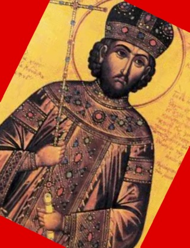

Saint Constantine 'the Great' I Emperor of Rome
Founder of many things probably
Here is some (probably wrong time frame) Roman music to lisen to while you look at this wonderful‽ website
Emperor Constantine was a Roman Emperor in the 3th century. He was a fairly swell guy who managed to do a lot of conquering (as is roman tradition). He is most famous for naming a thing after himself (another roman tradition) in this case a city, Istanbul (was Constantinople) He also declared himself the emperor of the whole empire, which was administratively split (yet another roman tradition) which shortly after fell apart again and was eventually destroyed in 1453. He also did some other stuff probably... Something about church and state, I'm not too sure wikipedia probably knows. He was a saint though which is kinda cool, especially since he killed and conquered a whole lot, truly an inspiration to us all, assuming you want to be both a roman emperor and a saint of which there are a few.